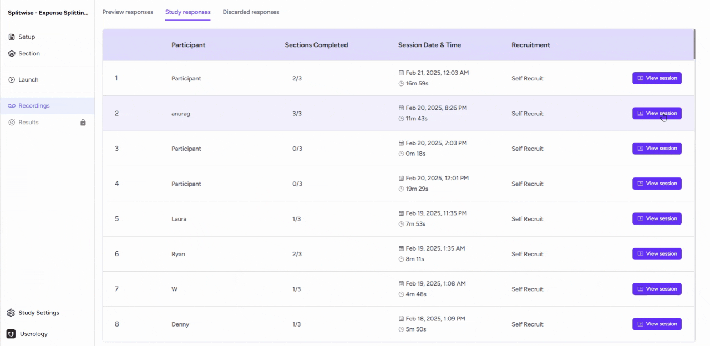
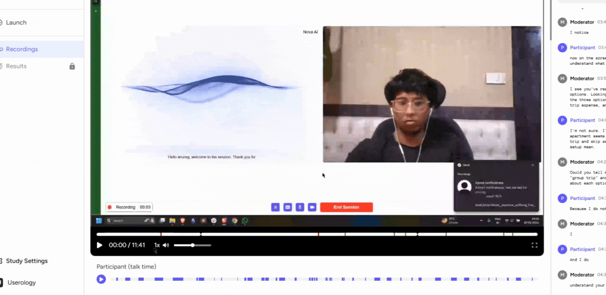

This article will help you understand how to view and interact with participant sessions, interpret AI findings, and navigate between different participant responses. Let's dive in!
Accessing and Understanding the Participant Session
To begin, navigate to the recordings tab on your dashboard and click on 'view session' for the participant you're interested in. On this page, you'll see two main elements: a video and a transcript of the session.

Interacting with the Video and Transcript
The video pane allows you to:
- Play or pause the video
- Adjust the speed and volume
- Switch to full-screen mode
Also, the transcript panel on the right hand side is interactive. You can scroll through it, and clicking on any part of the transcript - and the video will start from that point.

Understanding AI Findings and Overview
On the video progress bar, you'll notice red and green markings. These are AI findings, indicating positive aspects and challenges identified in the session.
AI also provides an overview of the session, including user experience ratings. You can navigate to different sections to view the AI overview and findings for each.

Usability Score and switching participant Responses
For task-based sections, like the 'hotel booking task', you'll also see a usability score. For a detailed understanding of the usability score, please refer to this article.
Finally, to switch between participant responses from this page, click on the participant selection option.
Remember, if you need further help, please email us at support@userology.co